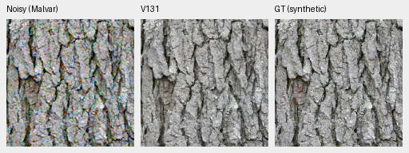
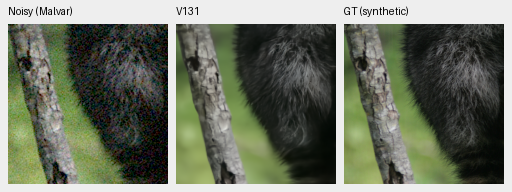
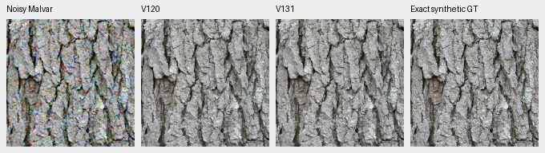
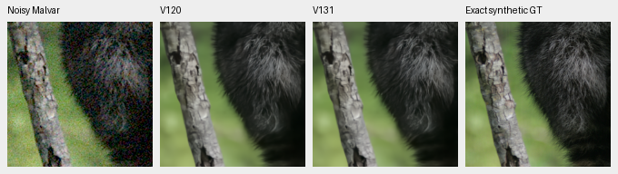
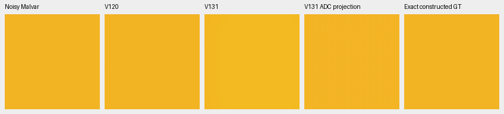
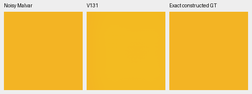
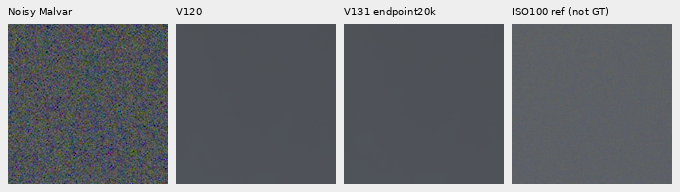
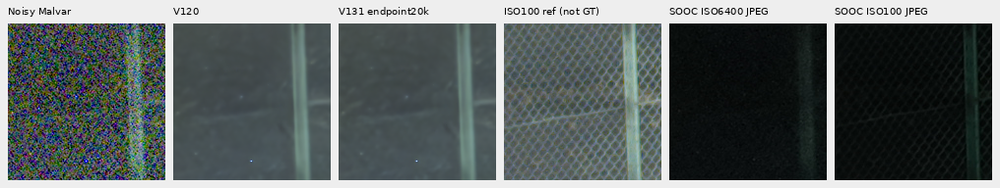
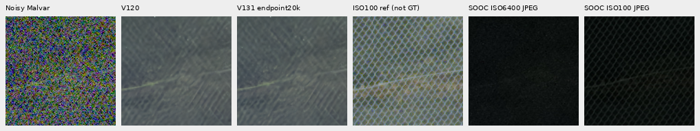

V131 completed broad review: native evidence
One native pixel per image pixel. Use browser zoom 100%. Horizontal scrolling preserves pixels. Metadata is in manifest.json.
crop-a27e137b35fa4f60.png
crop-399aed6b551c5a5c.png
bark-comparison.png
fur-comparison.png
adc-color-outlier-comparison.png
adc-color-outlier-triplet.png
protected/main-overcast-sky-comparison.png
protected/main-building-detail-comparison.png protected/main-foliage-comparison.png
protected/main-foliage-comparison.png protected/main-chain-link-fence-comparison.png
protected/main-chain-link-fence-comparison.png protected/mesh-nominal-fine-green-mesh-left-comparison.png
protected/mesh-nominal-fine-green-mesh-left-comparison.png
protected/mesh-nominal-fine-green-mesh-right-comparison.png protected/mesh-profile3879-fine-green-mesh-left-comparison.png
protected/mesh-profile3879-fine-green-mesh-left-comparison.png protected/mesh-profile3879-fine-green-mesh-right-comparison.png
protected/mesh-profile3879-fine-green-mesh-right-comparison.png